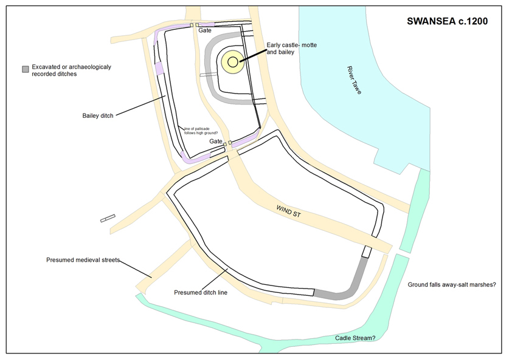

Development of medieval Swansea
Keith Lilley and Gareth Dean
Swansea took shape gradually through the Middle Ages. The different stages that shaped the town’s development are reflected in its physical layout, in its patterns of streets and house-plots. Through studying Swansea’s plan, it is possible to map out these stages of development, and suggest when parts of the town were first laid out and developed. What follows is an attempt to link the changing shape of medieval Swansea with key phases of urban growth, something that can be done by combining archaeological and documentary evidence with an analysis of the town’s plan.
The sequence of development that emerges from this is mapped out here using different colours to represent a particular phase in medieval Swansea’s evolution. At least four phases are identifiable and because the chronological sequence of these is by no means certain, the discussion offers a range of alternative interpretations on how Swansea was shaped during the Middle Ages.
Pre-Norman Swansea
Conventional accounts of the development of medieval Swansea usually start with the Norman period and the construction of the castle in around 1100 under Henry Beaumont, Earl of Warwick. While there is no doubt that the arrival of the Normans had an impact on Swansea, as elsewhere in south Wales, urban activity in the region prior to the Conquest is also well attested. In particular, early churches in Wales are in some cases linked to nascent urban development, in places such as Llandeilo and St David’s. One of the common characteristics of such sites is the presence of an elliptical-shaped enclosure, within which the early church is itself located.
While not all pre-Norman church sites will have served as foci for urban activities, the presence of an adjacent settlement is sometimes a sign that market functions and trading were being developed alongside a church’s religious function. At Llandeilo for example, the church of St Teilo sits in an elliptical enclosure, and on its north-west flank a broadened street functioned as the medieval market place. It is not until the thirteenth century that Llandeilo gets mentioned in written sources as a ‘town’, but this pattern – of an early church and an adjacent market place – suggests much earlier urban origins, akin to sites such as Armagh and Kildare in Ireland.
At Swansea, a large elliptical enclosure is evident at the northern end of the medieval town (coloured green on the map here): could it too have been an early church enclosure, a focus for early urban settlement?
Early elipitical enclosures have been recorded across the Gower landscape. Jonathan Kissock suggests some of these relate to agricultural estates, perhaps associated with the church or even preserving earlier Roman land holdings. In the Middle Ages, the enclosure identified at Swansea contained a chapel dedicated to St John. This was in the hands of the Knights Hospitallers by the mid-twelfth century. It is conceivable that St John’s stood on the site of an earlier church, and one small piece of evidence in support of this is the scattered lands that belonged to it, suggesting it had a long-standing role as a site of worship in the local area. If there was a church here before the Conquest, such an important location, astride a road leading to and from the ferry across the Tawe, would have no doubt acted as a suitable focal point for trading and potential settlement. Jonathan Evans’ map of Swansea, of 1823, does show a broadening street at Greenhill, located at the junction of roads that led off from here to Carmarthen and Neath, just outside the elliptical enclosure. Could this be a pre-Norman settlement nucleus?
Whether the elliptical enclosure evident at Swansea functioned as an earlier settlement nucleus will require further study through archaeological investigation and documentary research. If there was a nascent urban settlement pre-dating the arrival of the Normans, then it would not be unusual. It would turn on its head the standard interpretation of Swansea’s medieval urban development, for the town is usually seen to have developed northwards, rather than the other way around. Of course it is perfectly possible for a medieval town to have more than one focus, or urban nucleus, and at Swansea it may be that there were in effect two areas of pre-Norman activity, one to the north around Greenhill (focused on the elliptical enclosure and church), and one to the south, along the sheltered and commercially attractive waterfront of the Tawe. It is this riverside area that may have formed the focus for a ‘Viking’ town at Swansea.
The evidence for Viking Swansea is considered more fully in a separate discussion (see Viking Swansea), but suffice to say that the possibility exists for a trading settlement having been set out along what became Wind Street. The conventional view of Swansea’s early urban origins is that this area was part of a castle-town established under the Earl of Warwick at the same time as the castle’s construction in the early-twelfth century (see below). Alternatively, the Norman castle might have been placed in an existing urban landscape, a pattern to be observed in many other places at the time of the Conquest, at Bristol, Norwich and Hereford for example.
The place name, 'Swansea' is in itself problematic for determining the origins of the town. The name is first recorded on coins dating from the 1140s, indicating the presence of a mint in Swansea, with the first record in charters in 1153 and 1184. The often cited view is that the name is of Viking origin (‘Sweyns-ey’ – Sweyn’s island), but alternative suggestions have seen it as a corruption of Welsh for lower meadow island or an association with St Cenydd. Whatever the origins of the name, Swansea’s Viking origins are hazy to say the least. There is evidence for a wider pattern of Irish-Norse trading activity in the area, and the layout of the area of Wind Street (coloured blue on the map here) is similar to some Viking towns in Ireland. A trading association is also indicated in twelfth century documents from Dublin, which record the presence of people from Swansea and Cardiff.

At Swansea it is plausible to see the Norman castle as a later imposition made on the townscape. This interpretation is suggested by the fact that Wind Street and High Street share both the same alignment and street-width, to the north and to the south of castle (as is evident on the plan), suggesting these alignments were once joined and had formed a single street that ran through where the castle was later constructed. The extent of this putative 'Viking Swansea' is mapped here (the darker blue area). The width of the castle enclosure also matches with the width of Wind Street’s plot-series, and this again suggests that Wind Street once extended further northwards but was cutback when the castle was built. If the arc of Wind Street, following the banks of the Tawe, is extended northwards underneath the castle, there is a visible symmetry evident in the postulated layout of pre-Norman Swansea. A more elongated area of Wind Street perhaps once existed, and halfway along its west side (where the street widened for the market place), access to connect the town with its hinterland was provided by a road that later became St Mary’s Street.
Although a Viking town at Swansea centred on Wind Street is not proven archaeologically, both the location and layout of the medieval town hint at the possibility for a trading settlement being present there before the arrival of the Normans. The proximity of the shore of the Tawe, with plots backing onto it, is a characteristic seen in other Norse/Viking towns, around the Irish Sea and the North Sea. The Strand at Swansea, like the Strand in London, could have functioned as an early trading hub, something that would have made Swansea an attractive proposition for Viking settlers and traders in the tenth or eleventh centuries.
Norman and English Swansea
Despite the circumstantial evidence for pre-Norman Swansea, there is still of course the probability that, as an urban place, it owes its origins principally to the Normans. Two scenarios are possible: one is that the castle and town were both of Norman origin, created simultaneously when Henry Beaumont was granted the lordship by William Rufus; the second is that the Norman castle was built to dominate an existing town focused on Wind Street, so that the existing town became subsumed as a new Norman ‘castle-town’. The evidence can be read both ways. Norman lords also widely practiced both strategies on their newly-acquired lordships in both England and Wales at this time (see Norman castle-towns).
Sitting in a square-shaped enclosure, the new Norman castle at Swansea covered a large area (coloured brown on the development map). The motte, the most defensive part of the castle complex, stood on the eastern side of the enclosure on a prominent rise in ground-level, immediately overlooking the Tawe. This close proximity of castle and river is a characteristic feature of other Norman urban castles, and partly reflects the role of the castle to oversee local comings and goings. It also enabled the occupants of the castle, when under siege, to escape more readily. Having a castle encircled by a town also helped in its defence, for the surrounding townscape slowed attackers, perhaps confusing them, and focused fighting away from the castle. There is archaeological evidence for the motte within the castle enclosure at Swansea, as well as ditches outside its circuit walls. There was also a ditch around the motte, but what existed within the rest of the castle enclosure, the bailey, is difficult to say. By the fourteenth century, there are houses and properties on the western side of the enclosure, while the ‘new castle’ of William de Briouze occupied the south-eastern part, overlooking the market place and Wind Street (see below).
In the early-twelfth century, the bailey area was perhaps just an open space used principally for mustering men and arms. If there were domestic buildings located here they most likely would have stood on the west side, fronting the street running through the bailey, later named Castle Street. It ran between the two gates that led from the bailey into Wind Street and High Street, crossing right in front of the castle’s motte. The townsfolk using the main street axis through the town thus traversed a route that brought them into close sight of the lord. An alternative route was possible. For those wishing to avoid passing through the castle bailey Goat Street provided a bypass around the castle between High Street and Wind Street. This presumably became necessary at those times when the gates into the bailey were closed. It is possible then that within the bailey area, the motte, with the street and associated buildings, formed in effect a small defended Norman urban nucleus. This could have been inserted into an existing urban landscape, or it could instead have formed the initial Norman castle-town established during the early twelfth century, in the time of Henry Beaumont. Once again, there are alternative ways of reading the evidence.

By the early- to mid-twelfth century the urban area of Swansea most likely comprised Wind Street, as well as the castle area adjoining it to the north. This is probably the extent of the town at the time that it received a charter and urban privileges, granted after 1153, from Henry de Newburgh. The built-up area of Wind Street is clear from the town’s plan. The plots that run back from the street frontage on both sides give an overall regular appearance to this part of medieval Swansea. Wind Street thus forms a clear and identifiable unit within the urban landscape, and probably reflects its origins as an area laid out in one episode.
By the middle of the twelfth century, Wind Street was thriving, as artefacts from archaeological excavations in plots along the street suggest. The plots were being built up both at the front but what the buildings looked like at this time is difficult to say, as most excavations by necessity have explored the rear parts of house-plots rather than then street frontage. Excavations near the southern end of Wind Street have also revealed evidence for a defensive ditch, and this looks to have extended along the rear boundary of plots fronting the west side of Wind Street. On the plan there is certainly a very distinctive boundary parallel to Wind Street, placed along its length at an equal distance from the street. Support for this interpretation comes from excavations at the southern end of Wind Street. Here a substantial ditch, which aligned with the property boundary, dated to the early twelfth century. All this suggests that a line of defences once existed on the western side of Wind Street, while the eastern side was protected by the river. Well before construction of the town walls were first begun then, Swansea appears to have been a defended town.
While the castle and Wind Street form the earliest built-up parts of the medieval town, clearly the development of Swansea continued. This is evident in two new areas in the town, one to the west of Wind Street, around St Mary’s church, and one to the north of the castle, along High Street. These extensions to the town-plan may have occurred at about the same time, perhaps in the later twelfth of early thirteenth centuries. They certainly post-date the area of the castle and Wind Street, for they are both located peripherally, reflecting additional spaces created for urban expansion. The archaeological artefact evidence from sites in these areas also indicates that these were parts of Swansea that were seeing quite intense urban occupation during the thirteenth century and later.
As with Wind Street, the patterns of plots along High Street, as well as around Fisher Street and Cross Street, are quite regular in their overall appearance (see the area coloured orange on the development map). This coherence in urban form suggests that these areas were each laid out in one phase of development, each carefully controlled and organised, with blocks of land demarcated for the new streets and associated areas of plots. The new area established on the west of the town around St Mary’s church, was laid out using Fisher Street as a central axis, its curving alignment mirroring that of Wind Street to the east. Along Fisher Street plots were set out on both sides of the street, those to the east extending as far as the line of the ditch encompassing plots fronting Wind Street, and those to the west extending to a new line of defences, recorded as the town ditch, along the Cadle, a small stream that skirted around Swansea’s western side. Cutting across Fisher Street at ninety degrees is St Mary’s Street and Frog Street, both probably an existing alignment connecting Wind Street and its market place with the town’s hinterland.
As well as laying out new streets and plots, this outward expansion of Swansea also accommodated the creation of Swansea’s new parish church of St Mary’s. St Mary’s is not recorded until 1291, but antiquarian drawings of the medieval church show it had architectural characteristics of rather earlier date, perhaps around 1200-1250. The layout of Fisher Street seems to have been designed with St Mary’s in mind, leaving a large open space to accommodate the church and its cemetery. The northern end of Cross Street took a sharp right-hand turn to connect it with Goat Street, suggesting that the latter was there first, and that Cross Street and Fisher Street came later. In effect what these two streets did was to open up further land in Swansea for urban development, probably in the later twelfth or early thirteenth century, either when the town was under royal custodianship (between 1184 and 1203), or under de Briouze lordship, beginning with William de Briouze whose urban portfolio in south Wales at that time also included the towns of Brecon and Builth. Either way, ‘by 1215’, as Edith Evans has noted, Swansea ‘appears to have been a flourishing commercial centre’.
The growing economy and population of thirteenth-century Swansea was accommodated also by urban development along High Street, to the north of the castle. Here a long suburb (coloured light blue on the map), with deep plots on either side of the street, stretched its length between the castle bailey northwards to the area around St John’s church, largely filling a gap between the Norman castle-town to the south and the postulated ecclesiastical enclosure to the north. When High Street was first laid out, as a new suburb, is difficult to determine, but the likelihood is that it occurred at around the same time as Swansea was being expanded to the south and west around St Mary’s church. Indeed, the artefacts from the few excavations in the area of High Street do indicate an intensification of settlement from the thirteenth century.
The expansion along High Street may have occurred in several phases, as there are some slight variations in the sizes and shapes of plots along it. Access to the rear of plots on the west side of the street was provided by a back lane – called Back Lane – a feature characteristic of many such new suburbs established to extend towns in the Middle Ages. The new suburb at Swansea created an area for urban occupation that was much larger than the earlier twelfth-century part of the town, along Wind Street. In fact, High Street is twice the length of Wind Street. As a result of this later suburban development, the Norman castle at Swansea became hemmed-in by the growing town, becoming surrounded on its three landward sides by streets and houses.
Swansea at the time of William Cragh
By 1300, then firmly under the lordship of the de Briouze family, medieval Swansea had reached its maximum extent. Of course the town continued to change, to be reshaped, but no further areas were developed, at least until the later part of the eighteenth century when modern Swansea began to engulf the medieval town. After 1300, significant changes in the townscape included the building of the town’s walls, so extending the town ditch northwards and enclosing the area of Goat Street and the lower part of High Street. As well as the wall, town gates were constructed, at Frog Street near St Mary’s church, and at West Street, and also at High Street. The northern section of the town wall cut across the High Street suburb at its narrowest part, so the defensive circuit flanked both the western and northern approaches. It did not encompass the entire medieval town, however.
The walls and gates at Swansea were being constructed from the early to mid-fourteenth century onwards and reflect a significant investment in the town’s infrastructure. A new charter for the town was issued by William de Briouze III in 1306, and the walling of the town might be seen as a concerted effort on his part to elevate the town’s importance as well as its security. It was around this time too of course that the 'New Castle' appears to have been begun, and this might lend support to the idea that the rebuilding of the castle occurred during the lordship of de Briouze, around 1290-1310, even if it was ultimately completed later, under Bishop Henry de Gower. William’s castle renewal and the fortifying of the town with new walls were perhaps conceived as joint projects. Unfortunately nothing survives above-ground of the town walls, so it is not possible to seek out similarities in the architectural design of the New Castle and town’s defences.
As well as the walls and New Castle, a further major investment in Swansea’s urban landscape occurred at this time with the foundation of the Hospital of St David’s, endowed by Bishop Henry in 1332. It seems that the early to mid-fourteenth century was a time of much building work in Swansea, some of it perhaps initiated by William de Briouze, some undoubtedly led by Henry de Gower, but either way these were decades of Swansea looking forward to the future, building upon the past. It was the time too that the hanging of William Cragh was witnessed by the townsfolk of Swansea, the story of which was immortalised by contemporaries. The townscape that Cragh himself witnessed was one being actively reshaped by the same man who had him tried and executed, William de Briouze, Lord of Gower. Of course by William Cragh’s time, Swansea was already an old town, shaped over the previous two centuries, perhaps for rather longer.
The story of the physical development of medieval Swansea is, like accounts of Cragh’s hanging, compiled from a series of viewpoints and snapshots provided by various witnesses. The town’s landscape is one of these witnesses, and while sometimes its story seems to correspond and corroborate that gleaned from other sources, such as Swansea’s archaeology and historical records, on some aspects they also conflict and contradict each other. As with witness statements given about Cragh’s hanging and resurrection, then, there is a fair amount of uncertainty and reading-between-the-lines required to piece together the story of medieval Swansea. Similarly, too, we shall probably never know what really happened.